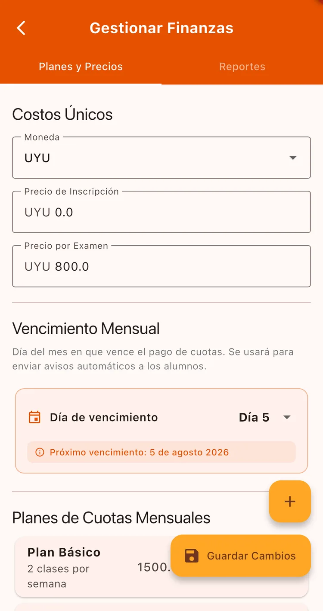
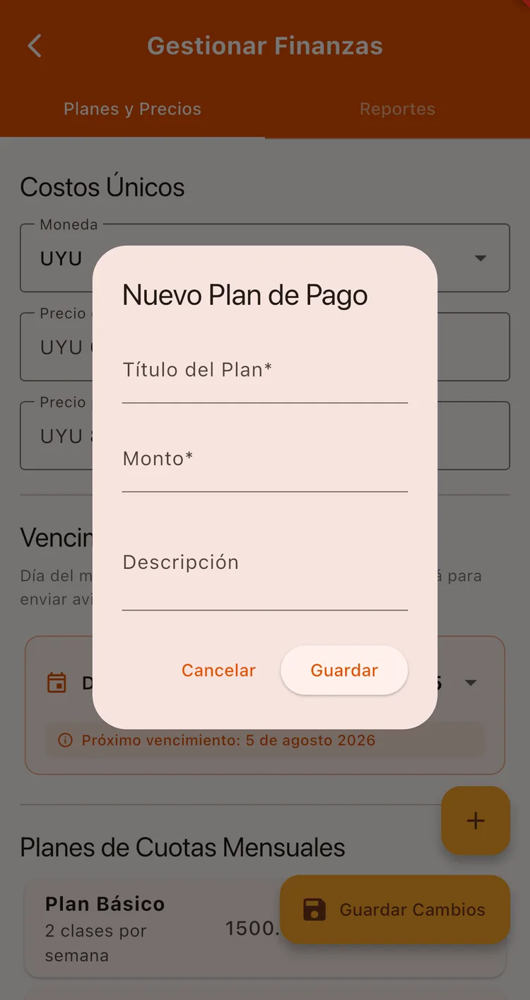
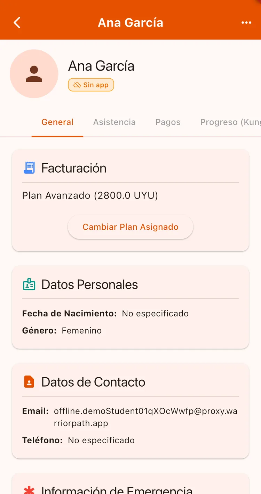
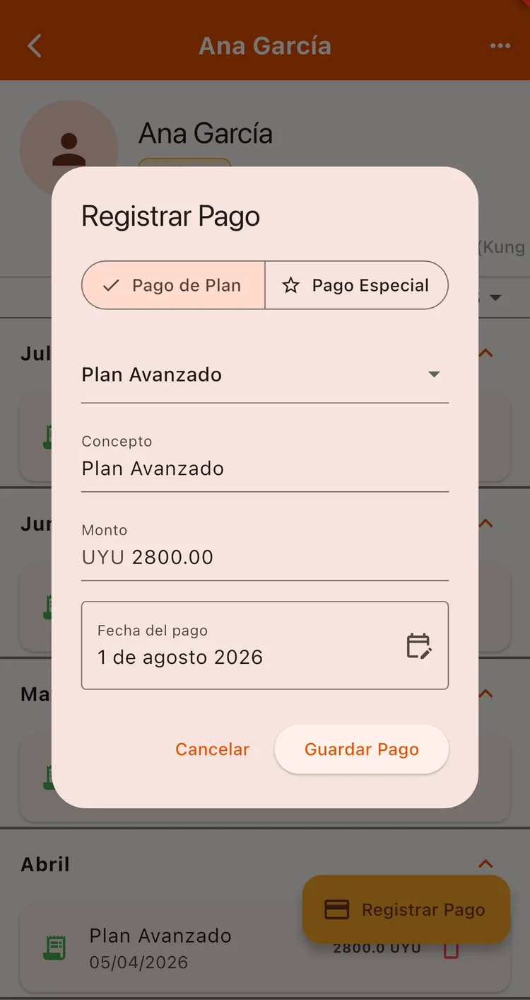
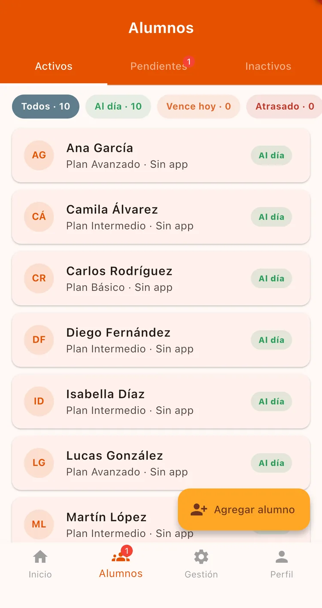
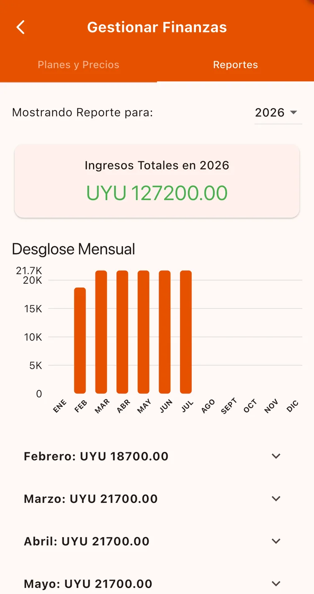

¿Para qué sirve?
Acá está el mayor ahorro de tiempo: en vez de perseguir las cuotas por WhatsApp, la app le avisa sola a cada alumno cuándo vence, y vos ves de un vistazo quién está al día y quién debe. También te queda el historial de todo lo cobrado.
Antes de empezar
- Tener la escuela creada.
- Tener alumnos cargados para poder asignarles un plan.
Paso a paso
Configurá moneda, precios y día de vencimiento
Andá a Gestión → Gestionar Finanzas, pestaña Planes y Precios. Elegí la moneda y cargá el precio de inscripción y el de examen.
Más abajo está el Día de vencimiento: el día del mes en que vencen las cuotas. De acá salen los avisos automáticos, así que conviene ponerlo bien.

Creá tus planes de pago
Con el botón + agregás un plan: Título del Plan (por ejemplo «Plan Básico»), el Monto mensual y una descripción opcional.
Creá tantos como necesites: por cantidad de clases semanales, por edad, por lo que uses en tu escuela. Al terminar, Guardar Cambios.

Asigná un plan a cada alumno
Andá a Alumnos, entrá al alumno y en la pestaña General buscá la sección de facturación. Tocá Cambiar plan asignado y elegí el plan.

Registrá un pago
En la ficha del alumno, pestaña Pagos, tocá Registrar Pago.
Podés elegir Pago de Plan (toma el monto del plan asignado) o Pago Especial para cosas puntuales como un examen o un seminario. Completá Concepto y Monto, la fecha, y guardá.

Controlá quién debe
En la pestaña Alumnos tenés filtros: Al día, Vence hoy y Atrasado. Es tu panel de cobros del día a día.

Mirá tus reportes
De vuelta en Gestionar Finanzas, la pestaña Reportes te muestra los ingresos totales del año, un gráfico mensual y el detalle de cada pago.

Los avisos automáticos de vencimiento solo le llegan a los alumnos que tienen un plan de pago asignado. Si a alguien no le llega nada, revisá eso primero.
La app le avisa a cada alumno el día anterior al vencimiento y de nuevo el mismo día si todavía no pagó. Vos no tenés que hacer nada.